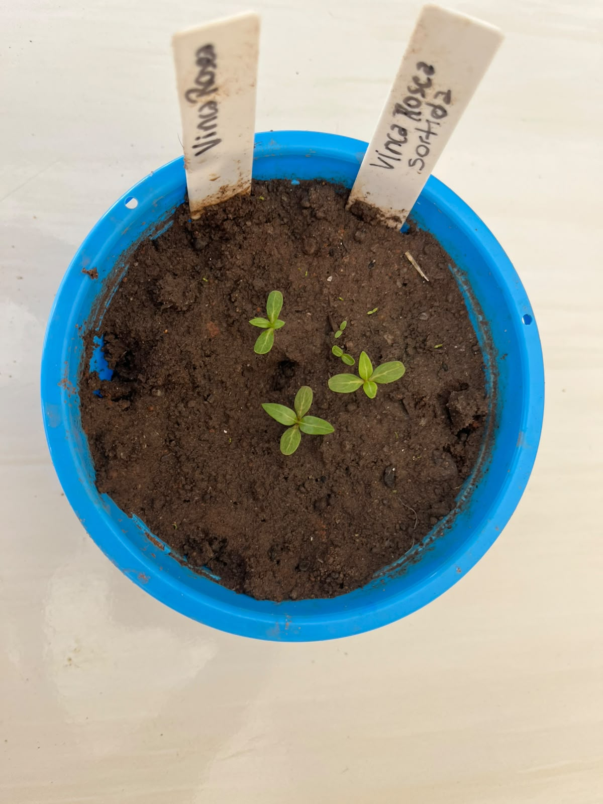
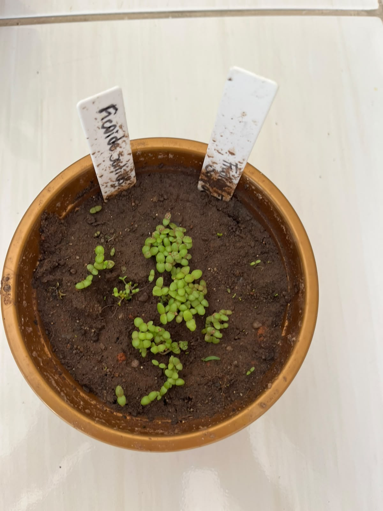

🌼 Flores do Jardim Sustentável
Além das hortaliças, a Horta Escolar Viva também cultiva flores, que tornam o ambiente escolar mais bonito, acolhedor e favorável à biodiversidade.
As flores desempenham um papel importante na natureza, atraindo abelhas, borboletas e outros insetos polinizadores, fundamentais para a reprodução das plantas e para o equilíbrio ambiental.
Na horta escolar, elas também despertam a sensibilidade, incentivam o cuidado com a natureza e fortalecem a educação ambiental por meio de atividades práticas e interdisciplinares.
🌺 Benefícios das Flores
- 🐝 Atraem polinizadores.
- 🌿 Favorecem a biodiversidade.
- 🌎 Contribuem para o equilíbrio ambiental.
- 🎨 Embelezam os espaços escolares.
- 💚 Estimulam o cuidado e o respeito pela natureza.
🌺 Nossas Flores Identificadas pelos Vasos Coloridos

🔵 Vinca Rosa
Vaso Azul - Flor cultivada no Jardim Sustentável da Horta Escolar Viva.

🟡 Margarida Grande
Vaso Amarelo - Flor cultivada no Jardim Sustentável da Horta Escolar Viva.

🟤 Fricoide Sortido
Vaso Dourado - Flor cultivada no Jardim Sustentável da Horta Escolar Viva.

⚪ Boca de Leão
Vaso Branco - Flor cultivada no Jardim Sustentável da Horta Escolar Viva.

🔴 Onze Horas
Vaso Vermelho - Flor cultivada no Jardim Sustentável da Horta Escolar Viva.

🟠 Flor de Mel
Vaso Laranja - Flor cultivada no Jardim Sustentável da Horta Escolar Viva.

🌸 Centaura Sortida
Vaso Rosa Pink - Flor cultivada no Jardim Sustentável da Horta Escolar Viva.

🟣 Crisântemo Dobrado
Vaso Roxo - Flor cultivada no Jardim Sustentável da Horta Escolar Viva.